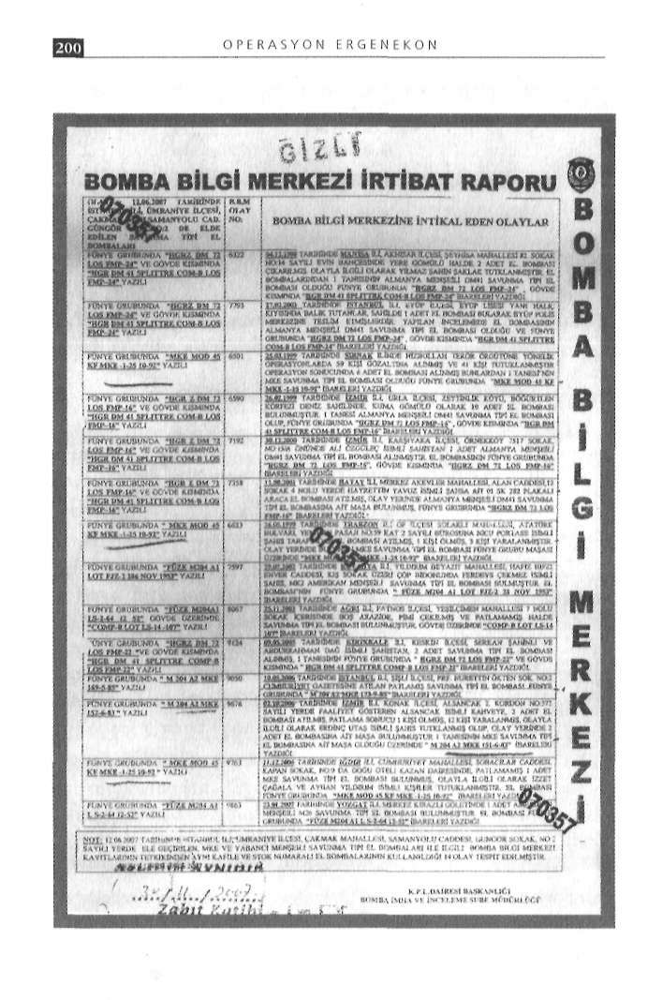
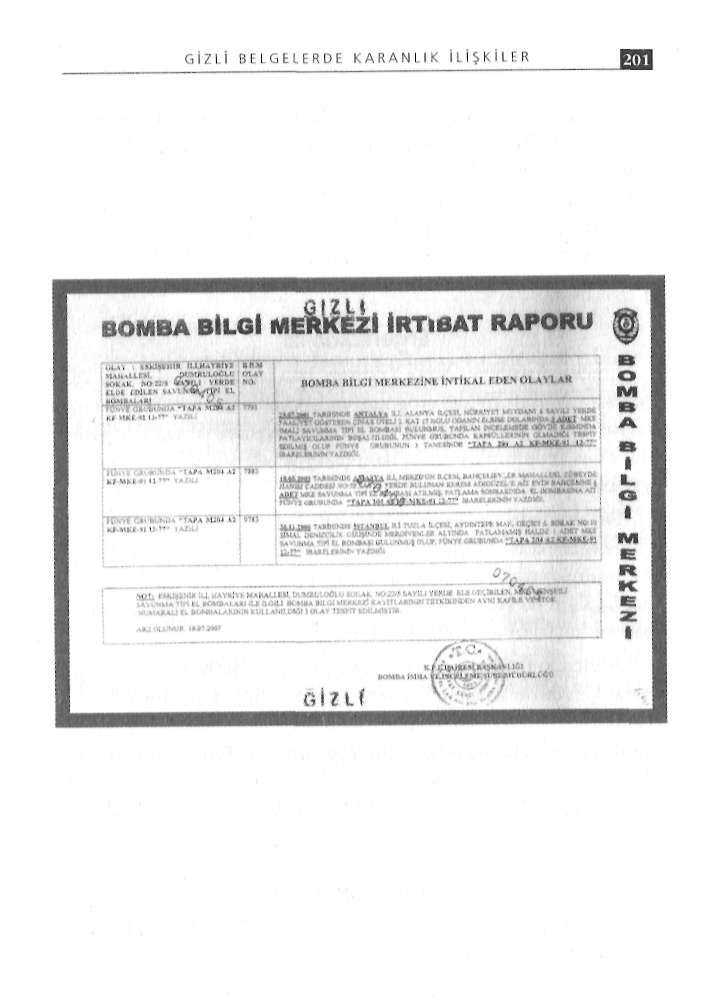

rine getirdiğini söyleyip ekledi: "Bu manava çok sık olmamakla birlikte gider gelirdim."
Muzaffer Tekin'in kanaati değişti
Ümraniye soruşturmasında gözaltına alınarak tutuklanan ve daha önce bu bombaların Hasdal Çöplüğü'nde bulunma ihtimalinin yüksek olduğunu söyleyen emekli Yüzbaşı Muzaffer Tekin de savcılıktaki sorgulamasında, el bombalarında çıkan parmak izleri nedeniyle kanaatinin değiştiğini belirterek, "O bombalar Oktay Yıldırım'a ait olabilir" dedi.
Cumhuriyet dahil 14 olayda Ümraniye izi
Ümraniye'de ele geçirilen 27 el bombasıyla ilgili Bomba Bilgi Merkezi İrtibat Bürosu'nca yapılan incelemede, aynı seriden bombaların 1998-2007 yılları arasında 14 ayrı olayda kullanıldı
ğı tespit edildi. Bu olaylar arasında,. Danıştay sanığı Alparslan Arslan ve arkadaşlarınca Cumhuriyet Gazetesi'ne atılan bombalar da var.
Dava dosyasına eklenen ve altında "Ümraniye'de ele geçirilen MKE ve yabancı menşeli savunma tipi el bombalan ile ilgili bomba bilgi merkezi kayıtlarının tetkikinden aynı kafile ve stok numaralı el bombalarının kullanıldığı 14 olay tespit edilmiştir"
notu düşülen rapordaki tespitlerden bazıları aynen şöyle: Madde 3-25.03.1999 tarihinde Şırnak ilinde Hizbullah Terör Örgütüne yönelik operasyonlarda 59 kişi gözaltına alınmış ve 41
kişi tutuklanmıştır. Operasyon sonucunda 6 adet el bombası alınmış bunlardan 1 tanesinin MKE savunma tipi el bombası olduğu fünye grubunda "MKE MOD 45 KF MKE-125 10-92" ibareleri yazdığı.
Madde 11-10.05.2006 tarihinde İstanbul ili, Şişli ilçesi, Prf.
Nurettin Ökten sok. No.2 Cumhuriyet Gazetesine atılan patlamış savunma tipi el bombası fünye grubunda "M 204 A2 MKE
173-9-85" ibareleri yazdığı.


OPERASYON ERGENEKON
GİZLİ BELGELERDE KARANLIK İLİŞKİLER
12-02.102006 tarihinde İzmir ili, Konak ilçesi, Alsancak 2.
- Analiz ve değerlendirme
Kordon No.372 sayılı yerde faaliyet gösteren Alsancak isimli
- Finans ve ticaret
kahveye, 2 adet el bombası atılmış, patlama sonucu 1 kişi ölmüş,
- Kültür ve bilim
12 kişi aralanmış, olayla ilgili olarak Erdinç Utaş isimli şahıs tutuklanmış olup, olay yerinde 2 adet el bombasına ait maşa bu
- Teori ve senaryo
lunmuştur. 1 tanesinin MKE savunma tipi el bombasına ait ma
- İletişim ve propaganda
şa olduğu üzerinde "M204 A2 MKE 151-6-83" ibareleri yazdığı.
- Hukuk
- Uluslar arası ilişkiler
Ergenekon izi
Organizasyon planının nasıl işleyeceği ise şöyle tarif ediliyor: Emekli Astsubay Oktay Yıldırım, bazı internet sitelerinde kö
"Bu dokuz departman örgütün tümünü oluşturmaktadır. De
şe yazıp Mesaj TV'de program yaparken, aynı zamanda İstanbul'un ünlü eğlence kulübü Reina'da bodyguard olarak çalışıyorpartmanlar Ergenekon tarafından örgütün merkez üyeliğine du. Polis, Yıldırım'ın Reina'daki çalışma odasındaki tüm bilgisaatanmış güvenilir, beş sivil yöneticiye doğrudan bağlı olarak yöyar kayıtlarına el koydu.
netilecektir. Beş sivil yönetici personelin Ergenekon ile teması ise atanmış ve güvenilir iki sivil personel ile sağlanacaktır. De
Bu aramada ele geçirilen flashdiskte word belgesi içindeki
"lobiergenekon" isimli dosya dikkat çekiciydi. Ergenekon soruşpartman başkanları merkezdeki beş yönetici tarafından seçilecek turmasını tetikleyen gelişmelerden biri kuşku yok ki, Ergene-ve yönlendirilecektir."
kon'la ilgili bu yeni bilgilerdi. Aynı dosya Muzaffer Tekin'in bilgisayar kayıtları arasında da çıkmıştı.
"Danıştay'dan sonra Ergenekon'u öğrendim"
Ayrıca, o flasdiskte içi boş andıç belgesi vardı. Emekli Orge
Ergenekon yapılanmasıyla ilgili bu dokümanın bir kopyası, neral Çevik Bir'in Genelkurmay 2. Başkanlığı döneminde İstih
Muzaffer Tekin'in ofisindeki aramada da ele geçirildi. Tekin, Erbarat Başkanlığından komuta katına gönderilmek üzere hazırgenekon yapılanmasıyla ilgili dokumanı, isminin Ergenekon örlanmış bu gizli andıç belgesinin Yıldırım'da bulunması şaşırtıcıygütüyle ilişkilendirilmesi üzerine meraktan araştırdığını ve bu dı. Asıl bomba, "lobiergenekon.doc" isimli word sayfası içinde kopyayı internetten indirdiğini öne sürdü.
çıkan "LOBİ ÇOK GİZLİ ARALIK 1999" başlıklı Ergenekon
"Benim Ergenekon'la hiçbir bağım yok" diyen Tekin, şunları yapılanmasına ilişkin özel bilgiler ve şematik yapıydı.
söyledi:
"Bu Ergenekon isimli yapı veya örgütü ilk olarak Danıştay Lobi Organizasyon Planı
olayında gözaltına alındığımda öğrendim. Ben bu yapı veya ör
Yıldırım'a ait bu özel notlarda, Ergenekon'a bağlı olarak faaligütün üyesi değilim. Amacı, stratejisi ve kuruluşu hakkında heryetleri tanımlanan Lobi'nin organizasyon planı ise şöyle tarif hangi bir bilgi sahibi değilim. Oktay Yıldırım'da ise bu doküedildi: manların ne amaçla bulunduğunu bilmiyorum ancak bu dokü
- Merkez
manlara internet aracılığıyla herkes ulaşabilir. Oktay Yıldırım'ın
- Araştırma ve bilgi toplama
Ergenekon'la bir ilgisinin olup olmadığını bilmiyorum."